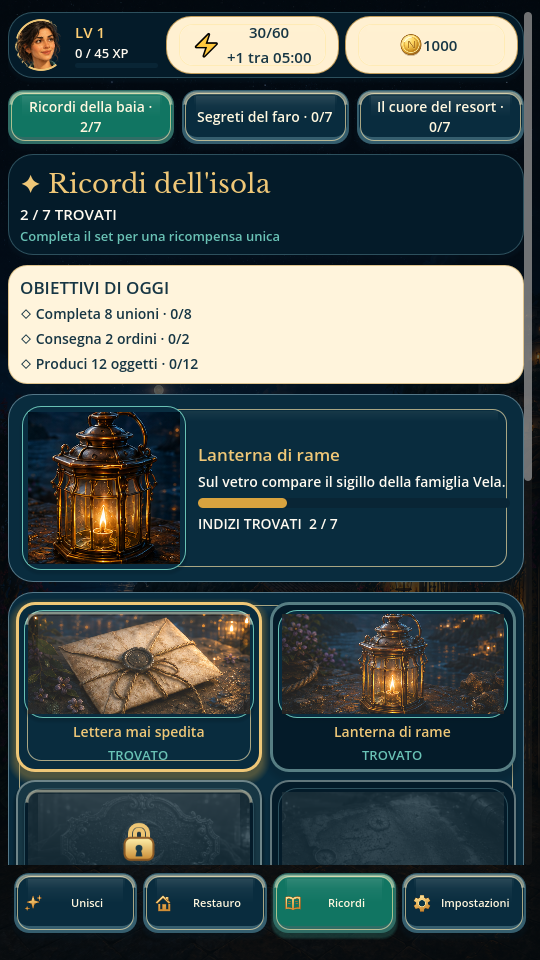
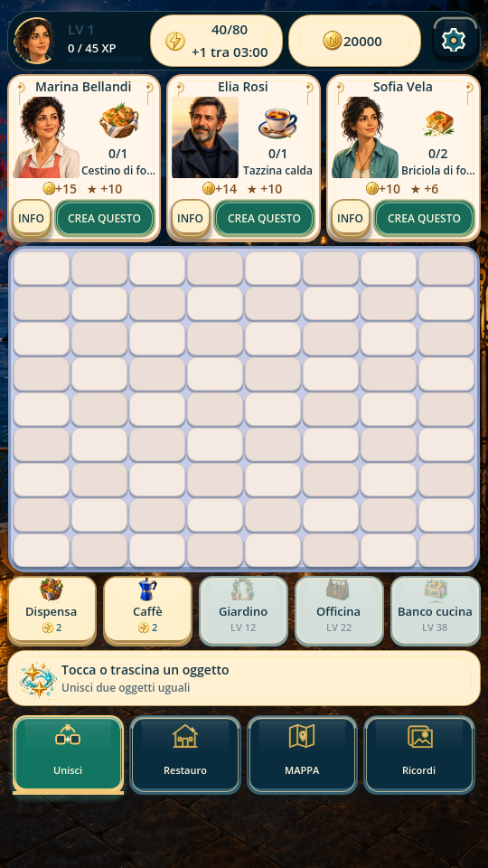
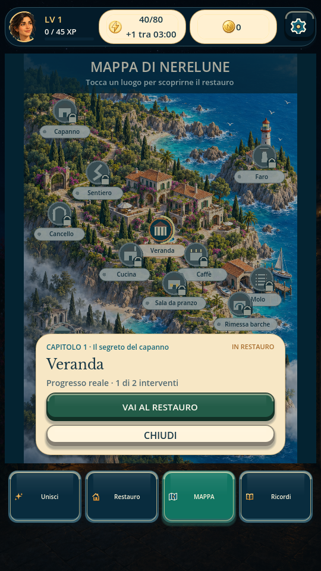

Merge board
Generate objects, drag them across the board and combine matching items to create more valuable forms.
PORTRAIT MERGE ADVENTURE
Merge useful objects, complete orders for the people you meet, earn coins and bring a forgotten seaside resort back to life while uncovering its memories and secrets.
AVAILABLE ON GOOGLE PLAY
Nerelune is an Android-first portrait Merge-2 adventure combining a tactile merge board with character orders, progression and the restoration of a coastal resort.
Generate objects, drag them across the board and combine matching items to create more valuable forms.
Prepare the requested items and deliver them to the people waiting for your help to move the story forward.
Spend the rewards you earn to repair and transform different areas of the seaside resort step by step.
Manage generator energy, coins and daily objectives as you decide which orders and upgrades to pursue next.
Progress through restoration chapters and recover pieces of the cove's history as new areas and stories open.
A portrait interface, onboarding and persistent accessibility and audio settings keep the experience approachable on Android.
SCREENSHOTS
Real Android screens showing merge gameplay, restoration, exploration and collectible memories.
Swipe horizontally to browse. Tap a screenshot to open it full size.

Collect clues, complete memory sets and unlock pieces of Nerelune’s story.

Generate objects, complete character requests and progress by combining matching items.

Spend coins earned from orders to repair and restore beautiful seaside areas.

Explore the cove, discover locations and follow the restoration journey across the island.
MERGE ADVENTURE GUIDES
Learn how merge-2 puzzles, character orders, story progression and seaside resort restoration come together in Nerelune.
How merge boards, character orders and long-term progression turn a puzzle loop into an adventure.
Read the guide →Why story-driven merge games use restoration and permanent progress to make every order matter.
Read the guide →See how Nerelune connects merge-2 gameplay, character requests and coastal resort restoration.
Read the guide →DLF TECHNOLOGY
Nerelune: Secrets of the Cove is available on Google Play and developed by DLF Technology as a portrait merge and restoration adventure.
For privacy information specific to Nerelune, refer to the Nerelune Privacy Policy and the disclosures provided with the Google Play release.
DISCOVERY & COVERAGE
Nerelune has been featured editorially and listed on independent game discovery platforms.

MORE FROM LUSOR GAMES
Drop celestial bodies, use physics and build combos in a cosmic merge puzzle.
Discover Astral FusionShape a character’s future through choices, time and changing circumstances.
Discover Life UnwrittenFind hidden details across illustrated scenes with pan and zoom.
Discover LookTwistPRESS & CREATOR RESOURCES
Official product facts, screenshots, descriptions and Google Play links are available in the LuSor Games press kit.
Open press kit